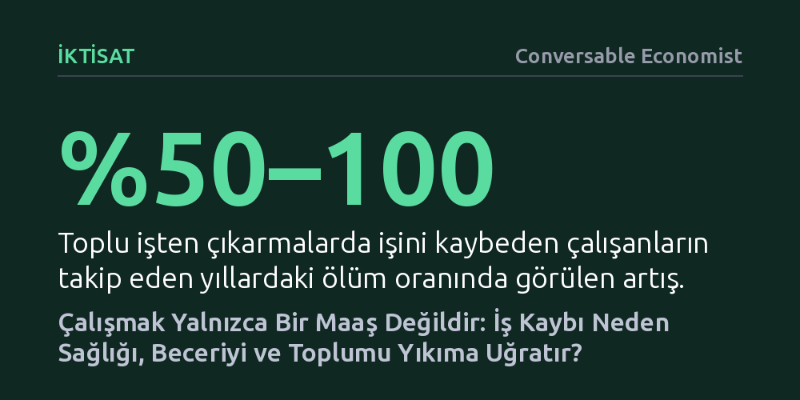

IKTISAT · Conversable Economist · 2026-09-07
Toplu işten çıkarmalar ve erken emeklilik gelir kaybından bağımsız olarak ölüm riskini belirgin şekilde artırırken, çalışmak ömrü uzatıp zihinsel sağlığı koruyor. Araştırmalar işin asıl değerinin maaşta değil; sağlık, mesleki gelişim ve toplumsal bağ gibi örtük faydalarda yattığını belgeliyor.
İşe sadece katlanılması gereken bir geçim kaynağı olarak bakan yaygın anlayışı sarsarak, işsizliğin ve işten çıkarmaların yarattığı derin insani maliyetlerin yalnızca nakit transferleriyle giderilemeyeceğini gösterir.

Geleneksel iktisat modellerinde iş genellikle katlanılması gereken bir külfet, boş zaman ise doğrudan tatmin sağlayan bir alan olarak kurgulanır. Bu dar yaklaşıma göre çalışma hayatı, yalnızca harcanan emeğin karşılığında nakit elde edilen mekanik bir sözleşmeden ibarettir. Oysa sosyolojik ve ampirik araştırmalar, çalışmanın insan için kimlik inşası, amaç duygusu ve hayatı anlamlandırma gibi çok daha temel işlevler üstlendiğini ortaya koyuyor.
İşin bu örtük ya da görünmeyen faydaları, çoğunlukla ancak kaybedildiğinde fark edilir. Güncel veriler, iş gücüne düzenli katılımın birey refahı üzerindeki etkisinin maaş bordrolarının çok ötesine geçtiğini; sağlığı doğrudan iyileştirdiğini, yaşam süresini uzattığını, depresyonu azalttığını ve kişiye vazgeçilmez bir sosyal ilişki ağı sunduğunu gösteriyor.
Eğer iş yalnızca kaçınılması gereken bir stres kaynağı olsaydı, işten ayrılmanın veya işsiz kalmanın insan sağlığını iyileştirmesi ve ölüm oranlarını düşürmesi gerekirdi. Ancak ampirik bulgular bunun tam tersini gösteriyor. Fabrika kapanmaları veya kitlesel tensikatlar sonucu işinden olan çalışanların takip eden yıllardaki ölüm oranları yüzde 50 ila 100 arasında artış gösteriyor ve bu tablo ortalama yaşam süresini 1 ila 1,5 yıl kısaltıyor. Üstelik bu kayıplar kişisel performans yetersizliğinden veya mevcut sağlık sorunlarından değil, tamamen bireyin kontrolü dışındaki toplu kapanmalardan kaynaklanıyor.
İş kaybını izleyen ölümler tek bir sebebe dayanmıyor; felç, kalp krizi, kazalar, intihar ve madde bağımlılığı gibi çok geniş bir yelpazeye yayılıyor. Bu durum, işsizliğin hem fiziksel hem de ruhsal sağlığı eşzamanlı çökerten zincirleme bir tahribat yarattığını kanıtlıyor. İsveç ve Danimarka gibi kamu sağlık hizmetlerinin evrensel ve ücretsiz olduğu ülkelerde yapılan araştırmalar, bu ölümcül faturanın sağlık sigortasının kaybından değil, doğrudan psikolojik yıkım ve sosyal kopuştan kaynaklandığını doğruluyor.
Bu etkinin sadece gelir kaybıyla açıklanamayacağının en net kanıtı ise emeklilik verilerinde saklı. ABD'de Sosyal Güvenlik haklarının başladığı 62 yaşında çalışanların yaklaşık üçte biri emekliliği seçiyor. Gelirlerinin önemli bir kısmı devlet maaşıyla telafi edilmesine rağmen, tam bu yaş eşiğinde emekli olan bireylerin ölüm riskinde anında yüzde 2'lik bir sıçrama yaşanıyor; bu da emekliliği tercih edenlerin ölüm riskinin yaklaşık yüzde 6 arttığı anlamına geliyor. Özellikle kimliğini işi üzerinden kuran erkeklerde bu etkinin çok daha belirgin olması, çalışmanın biyolojik varoluşu doğrudan besleyen gücünü gözler önüne seriyor.
Modern iş hayatı kesintisiz bir uyum sağlama becerisi gerektirir; yeni yazılımlar, değişen pazar koşulları ve dönüşen yöntemler çalışanları her gün dinamik kalmaya zorlar. Çalışanlar bu zorlukların üstesinden çoğunlukla örgün eğitim sınıflarında değil, mesai arkadaşlarıyla omuz omuza problem çözerek gelir. İş başında yaparak öğrenme, gerçekleştiği anlarda neredeyse tamamen görünmezdir; ancak yokluğunda acı verici biçimde hissedilir.
İş yerinde edinilen beceriler ve teknolojik yetkinlikler, resmi kurslardan ziyade gündelik deneme yanılmalarla kazanılır. Dahası, çalışma arkadaşlarının niteliğindeki artış, bilgi yayılması sayesinde bireyin kendi gelirini kalıcı olarak yükseltir. Zorlu bir müşteriyi yatıştıran bir meslektaşı izlemek, birlikte kod ayıklamak ya da ofiste pratik bir kısayolu paylaşmak gibi gayriresmi etkileşimler, çalışanların beşeri sermayesini kesintisiz besler.
Bu birikimli öğrenmenin kariyer boyu getirisi son derece yüksektir. Örneğin mezuniyetinin ardından işe girmek yerine boş bir yıl geçirmeyi düşünen 20'li yaşlarındaki bir genci ele alalım. Erken kariyer döneminde kazanılan tek bir fazladan deneyim yılı, yıllık geliri sonraki tüm çalışma hayatı boyunca yüzde 3 ila 3,6 oranında artırır. 25 yaşında 60 bin dolar kazanan ortalama bir çalışan için bu etki, emekliliğe kadar fazladan yaklaşık 86.400 dolarlık bir servet anlamına gelir.
İşsizliğin yarattığı maliyet bireyle sınırlı kalmayıp dalgalar halinde tüm çevreye yayılır. Bir bölgede işsizlik tırmandığında, işini kaybetmeyen bireylerin dahi öznel refahında hanehalkı gelirinde yüzde 4'lük bir düşüşe denk gelen bir gerileme yaşanır. Çünkü bir meslektaş işsiz kaldığında geride kalanlar da bir dostunu ve iş birliği ağını kaybeder; yeterince insan işsiz kaldığında ise yerel topluluğun dokusu bütünüyle yıpranır.
Bu sarsıntı insanların en mahrem ilişkilerine, aile yapısına ve evlilik kararlarına kadar uzanır. Dış ticaret şoklarının vurduğu bölgeler incelendiğinde, özellikle üniversite mezunu olmayan erkeklerin istihdam olanakları daraldıkça evlilik piyasasının çöktüğü görülüyor. Düşen evlilik oranları, artan tek ebeveynli haneler ve azalan doğurganlık, ekonomik sarsıntıların doğrudan sosyal bir kopuşa ve aile yapısının çözülmesine dönüştüğünü gösteriyor.
Tüm bu bulgular, emeğin piyasada sadece alınıp satılan sıradan bir meta olmadığını hatırlatır. Dinamik bir ekonomide iş gücünün verimsiz sektörlerden verimli alanlara veya yeni coğrafyalara kaydırılması kaçınılmaz ve verimlilik artırıcı bir süreçtir. Ancak bu yeniden tahsisin insani ve toplumsal bedeli, sürecin niteliğine göre devasa farklılıklar gösterir.
Bir çalışanın daha iyi bir fırsat için bir işten diğerine kendi isteğiyle geçmesiyle, bir fabrikanın kapanması sonucu kapının önüne konması asla aynı şey değildir. İlki refah ve üretkenlik artışı sağlarken, ikincisi derin psikolojik, fiziksel ve toplumsal yıkımlara yol açar. Bu nedenle ekonomi politikaları, insanları yalnızca işsizlik maaşıyla evde tutmaya değil; onların toplumsal bağlarını, mesleki becerilerini ve yaşam amaçlarını koruyacak biçimde iş gücünde kalmalarını sağlamaya odaklanmalıdır.